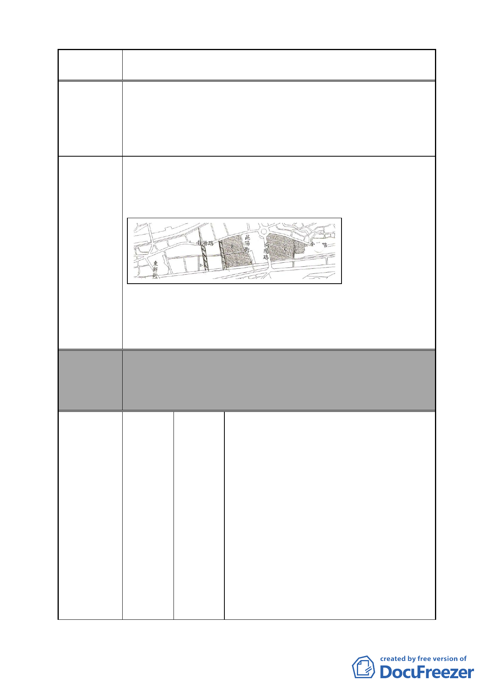

案名
變更臺北市南港區鐵路地下化沿線土地主要計畫案
之美支離破碎，人車交錯學童上學危機四伏，居民商店交易
困難，便無法刺激經濟，全因官員錯估民生需求，大興土木
破壞美好家園不符合現代綠能經濟，並強迫搬遷，居民強忍
搬遷之苦，與馬政府所苦民所苦，振興經濟背道而馳，殊不
知苛政猛於虎，民心向背昭然若揭。
1.保留原有居民及房屋。
2.促進繁榮回饋鄉親以進民享。
3.節約能源提倡綠能。
建議辦法
委員會
決議
編號
以劃線部分為道路拓寬疏通車流量。
例：規劃昆陽街為南港美食街，商店街或行人步道專用區（如
西門町行人徒步區），未來有助於都市發展經濟繁榮區域。
本案除文字誤繕應再作修正外，其餘依市府本次會議所送修
正計畫書內容通過。
（市府本次會議所送修正計畫書，本案將不拓寬昆陽街，逕
依現行規定辦理）
李佩玫、陳淑玲、鄭迪貞、王建昌、陳瑋
琪、吳如豐、吳宜子、吳家喆、劉玉惠、
張綠怡、古若梅、褚力維、楊嘉玲、張良
鎮、王建發、謝麗玲、林心笛、黃哲平、
劉淑娟、陳孋娥、汪家錫、劉玉鳳、康金
鳳、王建中、陳玉玲、練政棋、郭慶煌、
26
陳情人
翁妙慈、廖淑玫、李淑芬、陳剛浩、蔡乃
成、蕭康崑、劉文良、蔡幸翰、潘耀堂、
林震濤、吳美滿、姜智容、王家玉、阮春
剛、鄒昌儀、徐月英、徐慈光、鍾鎮源、
劉映余、韓雅君、張美秀、郭俊廷、陳瓊
華、謝明佑、陳冠華、邱增榮、王莫惠、
劉承明、曾金村、樊裕明、張碧玲、林國
軾、黃靜蘭、石秀卿、詹雅慧、廖明正、
- 36 -